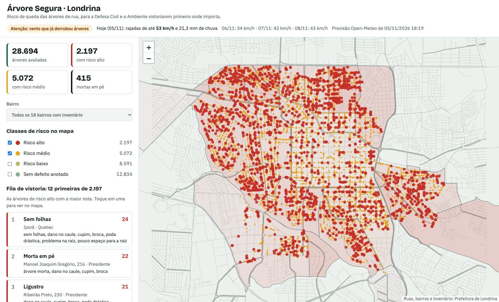

Árvore Segura Londrina
Sugere à Defesa Civil quais árvores de rua vistoriar primeiro, cruzando o inventário público da prefeitura com previsão de vento e fiação.

O problema
Em dia de temporal, árvores caem em fios, carros e casas. A cidade tem um inventário com dezenas de milhares de árvores, mas ninguém tem tempo de olhar tudo. A pergunta: por onde começar?
Ingestão
- Fonte: Geoportal da Prefeitura de Londrina (API ArcGIS REST, dado aberto), mais a previsão de vento da Open-Meteo.
- O servidor devolve no máximo 2.000 registros por consulta, então a coleta pagina com
resultOffsetaté acabar. - Dos 41.077 registros, 12.383 (covas vazias e tocos) saem por uma regra explícita, documentada, e não por descarte silencioso.
Nota de risco
Nota = pontos de defeito × porte + fiação, uma simplificação do método ISA TRAQ, usado por arboristas. As árvores com maior nota formam a fila de vistoria.
Como eu levaria para produção
- Transformar o script numa DAG agendada (Airflow ou similar).
- Retry com backoff e checkpoint do último offset, para retomar se a API cair no meio.
- Chave única por árvore, para a carga ser idempotente e incremental.
- Checagem de contagem e de nulos a cada execução, com alerta se a fonte mudar.
Meu papel
Defini o problema, as regras de descarte e a fórmula da nota, e conferi os números.
Os scripts de coleta, a nota e o mapa foram escritos com Claude Code sob a minha direção.
O que falta
Os pesos da nota não foram calibrados com um técnico e o inventário é de 2018, com 18 bairros. É um protótipo feito para o SmartCities Hackathon Londrina, e o mapa dele entrou no briefing da DRINA.